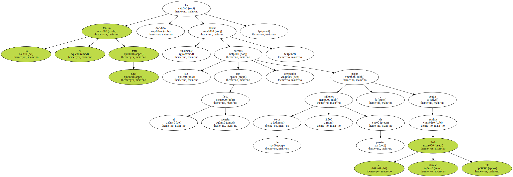
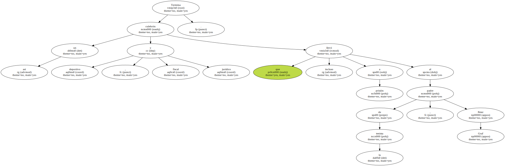
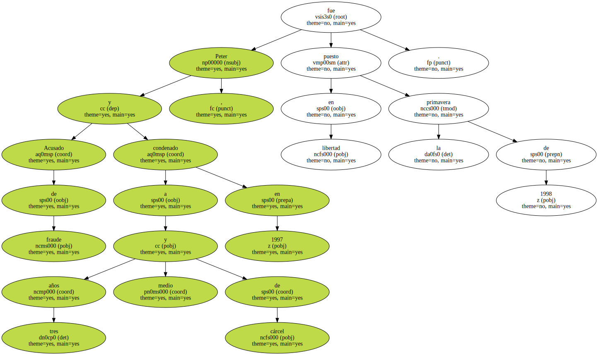
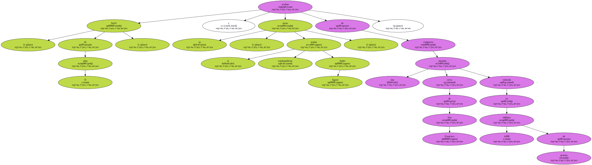

La ex tenista Steffi Graf ha decidido saldar finalmente sus cuentas con el fisco alemán , aceptando pagar cerca de 2.500 millones de pesetas , según explica el diario alemán Bild.
Jörg Frick , el abogado de la ex campeona , sin entrar a comentar las cifras , ha confirmado que su cliente ha retirado la demanda contra el fisco y ha aceptado pagar sus deudas , porque no ha tenido que hacer frente al pago de impuestos en Estados Unidos , donde tiene fijada actualmente su residencia.

Termina así un culebrón deportivo , fiscal y jurídico que llevó incluso a prisión al padre de la tenista , Peter Graf.
Acusado de fraude y condenado a tres años y medio de cárcel en 1997 , Peter fue puesto en libertad la primavera de 1998.
Steffi , de 31 años , y su novio , el tenista estadounidense Andre Agassi , acaban de comprarse una mansión cerca de San Francisco valorada en 4.000 millones de pesetas.
